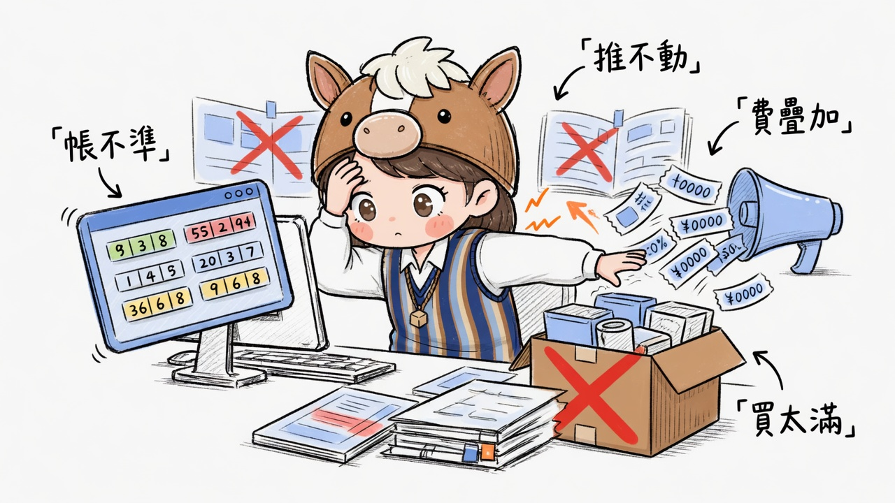
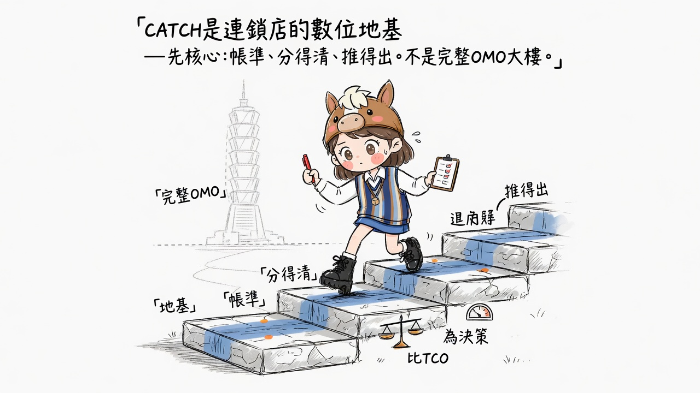
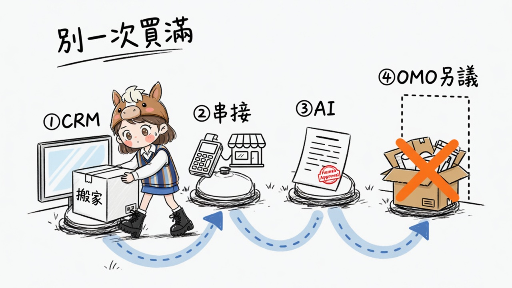
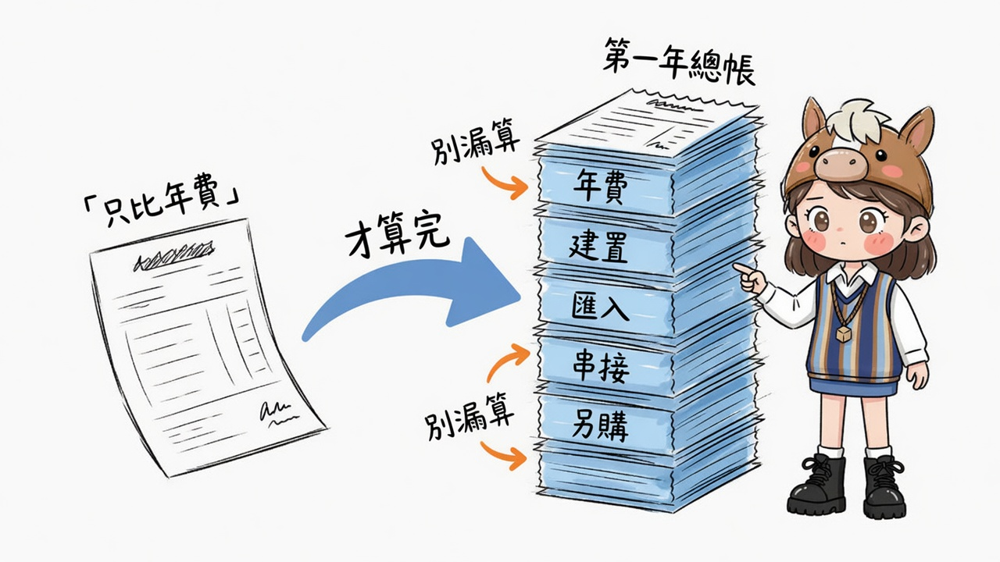
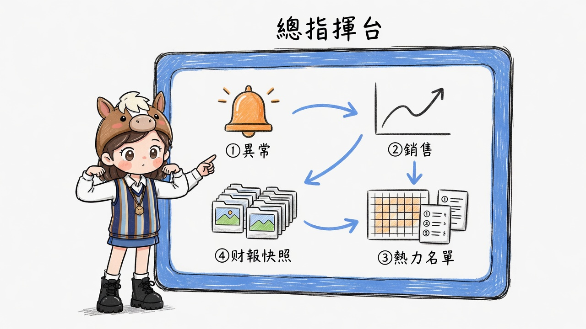
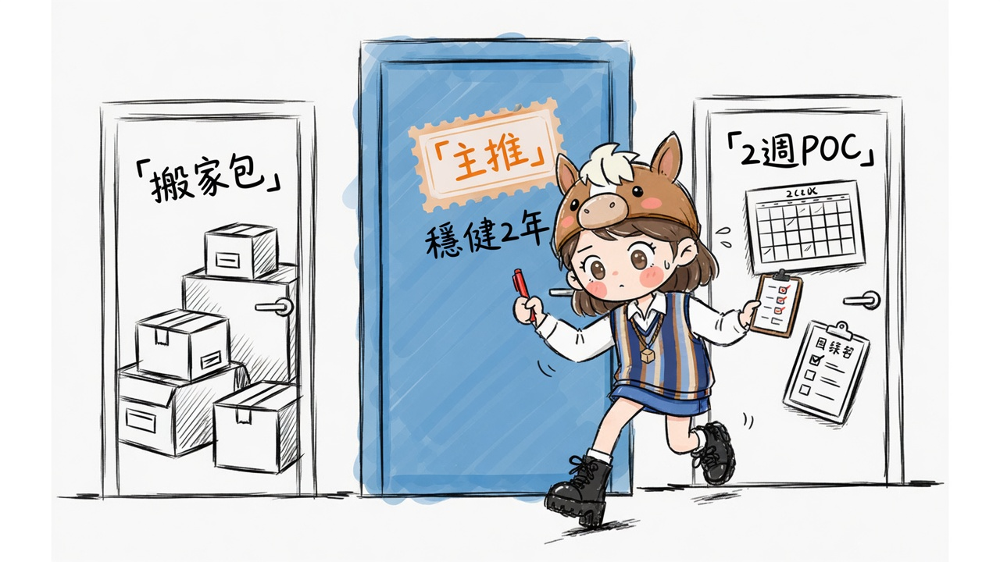

01 · 痛點共鳴
多數連鎖卡住的，不是「沒系統」
系統上了，帳對不齊、推播傷毛利、年費一層層疊、OMO 一次買滿用不到。

口播：很多連鎖不是沒上會員，是上了以後帳對不齊、只能群發傷毛利、年費疊加，還一次買滿用不到。
02 · 定位
門市經營的數位地基
先核心不逼你一次買滿 OMO
比 TCO第一年總帳與 2 年總包
為決策戰情可追溯，不堆功能

口播：定位是門市數位地基：先把 CRM 核心跑起來，不是一開始就蓋完整 OMO 大樓。
03 · 路徑
路徑清楚，才不會買錯層
① CRM 核心會員 · 分群 · 券 · RFM
② 串接POS／電商 · 一次＋年維
③ AI → ④ OMO加購人審 · OMO 另議

口播：路徑很清楚：先 CRM，再串接，AI 可選，完整 OMO 另議。別用一次買滿當預設。
04 · 第一年成本
要比總帳，不只比年費
決策框架（金額以正式報價單為準）：核心年費 · 建置／匯入／串接 · 可選加購。

口播：別只比年費表。把建置、匯入、串接、另購模組加起來，才是第一年總帳。再對 CATCH 穩健 2 年包。
05 · Demo 腳本
老闆週一看「總指揮台」
現場只深挖這一條（約 5–7 分鐘）。其它模組當「水管有接上」一句帶過。

① 異常ROAS／回購／流失
② 銷售90 日營收 · 回購 · 品項
③④ 熱力 · 財報名單 · 月結快照
cd catch-crm-hub → python server.py → http://127.0.0.1:8791/ 經營戰情
口播：先看異常哪裡漏，再看官網銷售，熱力與流失名單，最後月結快照可追溯整年。
06 · 成交下一步
三選一（或組合）
主推 · 穩健 2 年包鎖 CRM 核心年費路徑
遷移 · 搬家包約滿匯入 · 雙軌 · 長約可折抵
低風險 · 2 週 POC帳規則 · 分群 · 戰情一頁

會後帶走：① 第一年 TCO 對照（門市檔） ② 穩健包／搬家包報價範圍 ③ POC 兩週驗收清單